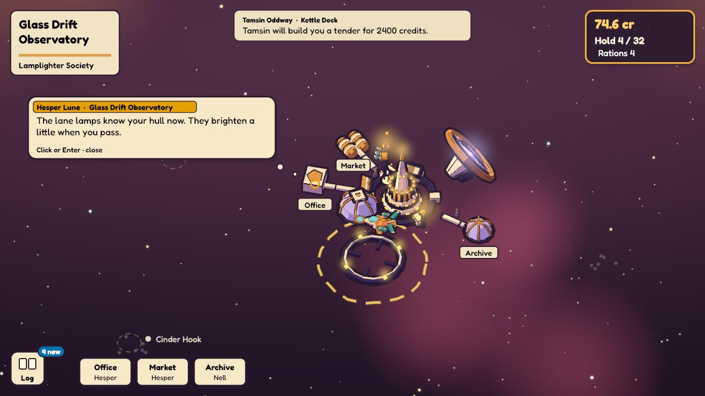
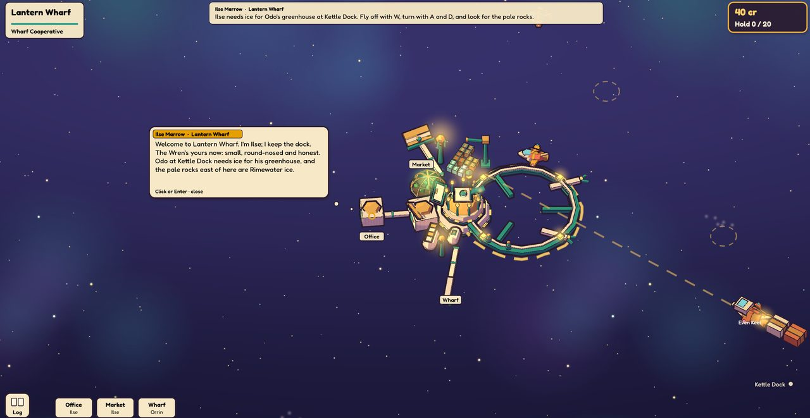
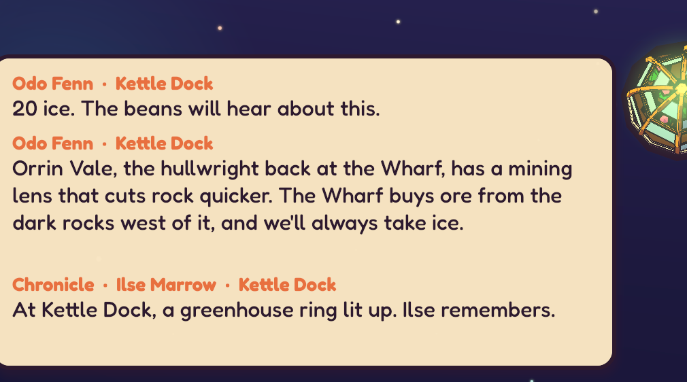
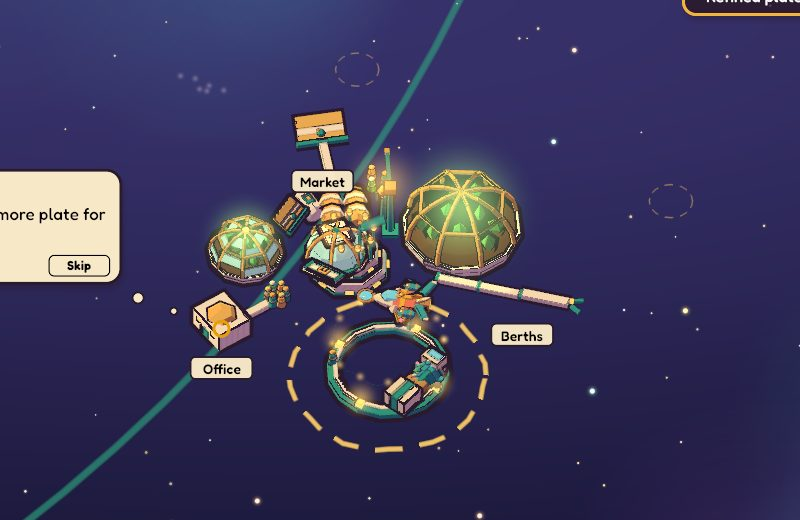
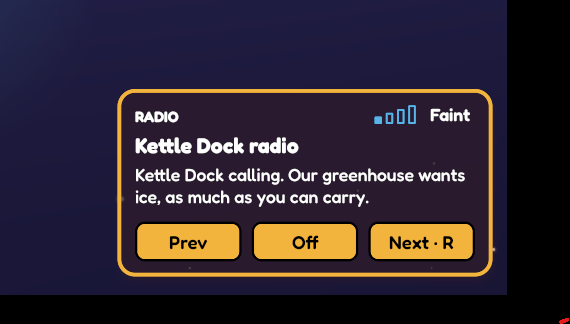
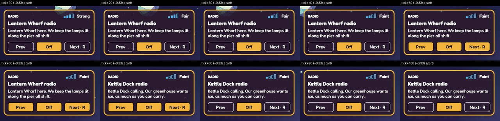

Irudd Galaxy · Known player-facing changes (Lantern Reach playtests)
What this is. This page lists behaviour to carry into the rebuild. It comes from three playtests of the previous build by Andreas, the game's designer, plus two scripted test runs. It is not a technical plan. It describes what the player should see and feel, and the agent doing the rebuild decides how to build it.
How to read an item. Every item stands on its own. It says where it happens and how to get there, what the player sees now (with the exact on-screen text where we have it), what Andreas said in his own words, and what good looks like. Quotes are copied as he typed them, typos included. Screenshots come from the previous build. Most are from the newest build he tested. Where a picture comes from an earlier build, its caption says so.
Priority reflects how strongly Andreas felt about it: ▲ High■ Medium● Low. Possibly still open means the problem was seen in an earlier build and the newest build was not checked for it. Treat it as a requirement anyway.
Screen size. The design resolution is 1280×720. Every "nothing overlaps" statement on this page means at that size.
This page only lists what is still open. When a change makes an item true in the game, delete the item in that same change. Don't mark it done or move it to a "fixed" section. Delete glossary entries once no item uses them.
Glossary
These are names from the current content of the first slice, the Lantern Reach. The rebuild may keep or change them, but the items below use them.
The player and ships
The Wren
The player's ship: small, round-nosed and orange. It starts with a 20-unit hold and 40 credits.
NPC ships
Other pilots flying their own routes, shown with a name label under the ship, for example Little Mercy and Quiet Lamp.
Tender
A small craft with no crew that Tamsin builds. It waits at a station to sell for a good price. It is offered for 2400 credits.
Stations (places you dock)
Lantern Wharf
The starting station, run by the Wharf Cooperative. Its rooms are Office, Market and "Wharf", the fitting room.
Kettle Dock
A nearby station with a growing greenhouse. Its rooms are Office, Market and Berths.
Cinder Hook
An ore depot in the Cinder Drift region, reached by riding a lane.
Brassmouth Exchange
The trade station of the Tollway Compact.
Glass Drift Observatory
A station of the Lamplighter Society. Its rooms are Office, Market and Archive.
People
Ilse Marrow
Dockmaster at Lantern Wharf. She keeps the office and the market there and gives the first goal.
Orrin Vale
The hullwright (ship fitter) at Lantern Wharf. He fits parts onto the Wren in the "cradle", the fitting room.
Odo Fenn
Keeper at Kettle Dock, who grows the greenhouse there. He wants ice and refined plate.
Tamsin Oddway
At Kettle Dock, in the Berths. She builds tenders.
Rook Adeyemi
Keeps the ore depot at Cinder Hook.
Hesper Lune
At Glass Drift Observatory, in the office. Hesper can send parts to the Wren.
World
Rimewater
The ice field of pale rocks just east of Lantern Wharf. It is the first place the player mines.
Lane / lantern current
A glowing route between regions. You enter it at a ring and it carries you to the next region. On screen it is drawn as a teal line. The first one, the lantern current, starts east of the Wharf and leads to Lantern Shallows and on to Cinder Drift.
Beacon
A marker along a lane. Two beacons have their own radio channel.
Goods and parts
Goods
Ice, iron ore and glassite are mined from rocks. Refined plate and rations are bought and sold.
Parts
Fitted in the cradle, for example the mining lens (mine faster), the hold extender, hold pods (+10 hold, heavier) and the seam lamp (a utility part).
Control modules
Parts that unlock a way of controlling the ship: the nav chip (click where to fly), the rock cradle (click a rock to mine it), the lane chart (click a place on the map to travel), the order slate (line up several orders), the loop log (repeat a route) and the docking clamp.
Screens and systems
Room / module
Each station is drawn as a set of modules (buildings), each with a room inside: Office, Market, Wharf/cradle, Berths or Archive. Each room has a keeper.
Cradle / fitting room
The room where parts are dragged onto the Wren's sockets: drill mount, utility, control rack, hold and engine.
Power and mass
The two fitting budgets. The Wren has 4 power and carries 3 mass freely. Going over the mass allowance makes the ship slower and its turns wider.
Locker
Storage for parts you own but have not fitted. There is one locker per hull.
Ready / Make / Friends
Tabs in the fitting room. Ready is parts on the rack to buy, Make is parts made to order, and Friends is parts ordered from contacts at other stations.
Goal banner
The wide cream bar at the top centre that shows the current goal and who gave it.
Log
The ship log, a list of past messages, opened by a button at the bottom left.
Radio
Each station and two lane beacons broadcast a channel with a range. In flight, a panel at the bottom right shows the channel, its signal strength, a text ticker and the buttons Prev, Off and Next (the R key).
Chronicle
Entries that record a change in the world, such as a greenhouse ring lit up.
Station key
Part of the agreed station design (see "Already decided"): a row of icons along the bottom of the docked view, one per module.
Already decided (do not contradict)
The docked station (agreed design).
Docking zooms in so the station fills the view.
Each module is clickable. Hovering a module lifts it slightly, gives it an outline and shows its sign: the keeper's name and one line about what is offered there.
Clicking a module glides the view to its room. The room panel opens beside the module and covers at most about 45% of the screen, so the station stays visible.
Right-click, Esc or a Back button returns to the whole station.
A station key runs along the bottom: one icon per module, so every room is one click away. An icon can carry a news ribbon (New, Changed or Closed) with a one-line headline on hover.
Talk. Characters speak in short bubbles over the speaker, and a click advances to the next line. The ship log is one small icon at the bottom left. No text panel grows with history.
Input. Mouse first: every room and action can be reached by clicking. The movement keys (W, A, S, D) always fly the ship off the dock, with no separate undock step.
Agency. Nothing changes the player's cargo, credits or fitted parts without a deliberate choice and a readable receipt.
Readability.
Text is pure black or pure white, never grey.
State colours come from a colourblind-safe set and are always paired with a shape, an arrow or a word.
Disabled buttons look different (for example dashed), never greyed out.
Collision. Everything that looks solid is solid: ships, rocks and stations. They bump and push, stations included, and nothing ever takes damage.
Turn rate. The ship turns at 180 degrees per second.
Basic controls stay. Once a basic control is unlocked (for example click to fly, click to mine, map travel, order queues or loops), it is never taken away.
Music. Music is made by the GM when it builds a module and ships with the module as ordinary audio files. Nothing is generated while playing, so every save and every player hears the same radio.
No live model while playing. The game makes no language-model calls during play for now. NPC lines, radio chatter and other flavour are written into modules. Model-driven "living" NPCs may come later, once the base game is solid.
Calm. The game is solo and forgiving. Nothing punishes the player for bumping into things.
Dock and station
The station key carries news ribbons ▲ High
Where and how
Dock at any station.
Look at the station key along the bottom of the docked view.
What the player sees now
The rebuilt dock follows the agreed design: docking glides in until the station fills the view, each building lifts and outlines under the pointer and opens its room when clicked, the station key runs along the bottom, and lamps, a crane and a skiff give it quiet life.
The key has no New/Changed/Closed ribbons, because nothing at a station changes on its own yet.
Andreas said
Actually looking again I realize I am in fact docked we just didnt follow the instrucions for how docks should look at all. Its super tiny and its spread out from the upper left, the three "rooms" in the toolbar down on the screen and the tiny dock
What good looks like
A station key icon carries a New, Changed or Closed ribbon when something happened there, with a one-line headline on hover.
A part ordered from a friend gets a proper arrival moment ● Low
Where and how
With at least 900 credits, open the fitting room at Lantern Wharf, then the Friends tab.
Order the seam lamp from Hesper Lune. It costs 900 cr and is sent to Glass Drift Observatory.
Fly to Glass Drift Observatory and dock.
What the player sees now
The only record is a line in the ship log: Hesper sent the seam lamp; it's in the Wren's locker.
At the dock, Hesper's bubble says a generic line that has nothing to do with the delivery: The lane lamps know your hull now. They brighten a little when you pass.
No card or receipt appears. To actually fit the lamp, the player has to fly back to Lantern Wharf.

Newest build, arriving at the Observatory where the ordered seam lamp is delivered. Hesper's line is generic, there is no arrival card, and the news sits unseen in "Log 4 new". The goal banner at the top names a person at a different station (see "The goal banner doesn't compete with the conversation").
What good looks like
At the receiving dock, the keeper mentions the delivery in their bubble ("Your seam lamp came in").
A clear receipt shows what arrived and where it now is (the Wren's locker).
The player is told where it can be fitted.
HUD and screen hierarchy
Goals and the radio get looks of their own ▲ High
Where and how
Once goals and the radio exist in the rebuild, look at them beside everything else on screen, docked and in flight.
What the player sees now
The rebuild gives each kind on screen today its own look: speech is a white bubble over the speaker, status (hold and credits) a pale blue panel at the top right, anything you can press an amber button (station signs included), and what just happened plain cream paper. It has no goals or radio yet. In the previous build, at least seven things with different jobs shared one cream box.
Andreas said
There is way too many identical styled beige boxes on screen at once that do different things. They all blend together
What good looks like
The current goal and the radio each have a look that differs from speech, status, buttons, signs and paper, so the eye knows where to go first.
The goal banner doesn't compete with the conversation that gives the goal, and names the right person ■ Medium
Where and how
Case 1: start a new game. Ilse's welcome is open on the left.
Case 2: later in the game, after Tamsin at Kettle Dock offers to build a tender, dock at Lantern Wharf, Brassmouth Exchange or Glass Drift Observatory.
What the player sees now
Case 1: the goal banner at the top already reads Ilse Marrow · Lantern Wharf: Ilse needs ice for Odo's greenhouse at Kettle Dock…, while Ilse's bubble on the left is still saying the same thing in her own words. The player reads it twice, in two boxes that look alike.
Case 2: the banner reads Tamsin Oddway · Kettle Dock / Tamsin will build you a tender for 2400 credits. while you are docked somewhere else entirely. At the Observatory it sits right above Hesper's bubble, so it looks as if Tamsin is talking there.
Andreas said
The top bar and the Popup for the wharf compete. Why is the top bar "current goal" there when the conversation that actually gives me that goal is ongoing
From an earlier build, about a goal banner that popped up mid-flight: this feels a bit random. this "quest" itself is a good idea but the way we present them needs work.

Newest build, case 1: the goal banner (top) and Ilse's welcome (left) say the same thing at the same time. For case 2, see the Observatory screenshot under "A part ordered from a friend gets a proper arrival moment".
What good looks like
A goal appears only once the conversation that gives it has finished, as a quiet confirmation that it was added.
While docked, the goal shown is either relevant to this station or clearly marked with where it belongs (for example "at Kettle Dock").
A goal never looks like the current station's keeper is speaking.
All active goals can be reviewed, each showing who gave it.
NPC ship name labels show further out and never cover the HUD at any zoom ● Low
Where and how
Fly near Little Mercy or Quiet Lamp as they cross the reach.
Zoom right in with the mouse wheel, in a 1280×720 window and in one scaled to 125% (1024×576).
What the player sees now
A trader's name shows only within 12 world units of the player's ship, away from the stations and from the other trader's label, on the side of the trader away from the player's ship. Pointing at a trader always names it. Further out it goes unlabelled.
The game can't see the zoom, so 12 units is what keeps a label clear of the HUD at the default zoom and wider. Zoomed right in, a nearby trader's label could still reach the order buttons or the status panel.
What good looks like
Labels stay readable and fully on screen. They never sit on top of stations, the HUD or each other. They step aside, fade or hide when crowded, and show again on hover.
Dialogue and NPCs
World news looks different from speech and names the right source ● LowPossibly still open
Where and how
The core has no world news yet: nothing at a station changes on its own. In an earlier build, messages and "Chronicle" entries (world changes) stacked in one box at the bottom left.
Deliver ice to Odo at Kettle Dock until a greenhouse ring lights up.
Buy the mining lens at Lantern Wharf.
Visit Cinder Hook for the first time and ask the dockmaster what changed.
What the player saw
Speech and world news were mixed in one box: Chronicle · Ilse Marrow · Kettle Dock: At Kettle Dock, a greenhouse ring lit up. Ilse remembers. That entry is tagged with Ilse at Kettle Dock, but Ilse lives at Lantern Wharf.
At Cinder Hook, on a first visit, "Ask what changed" returned the Kettle Dock greenhouse news instead of anything about Cinder Hook.
"A greenhouse ring lit up" was used for what Odo himself calls the first pane.
Buying the lens produced the cryptic The pilot's welcome changed.
The word "Chronicle" was never explained.
Andreas said
You cant tell which order these are supposed to be read in.

Earlier build. Talk and world news are mixed with no order, and the news is credited to Ilse at a station she isn't at.
What good looks like
World news looks different from speech. In the agreed design it surfaces as a ribbon on the station key with a one-line headline.
Every news entry names the right source and place, and is about the station you are asking at.
The wording is plain ("Odo's greenhouse at Kettle Dock grew its first pane").
Flight, collision and world
The ship stays on a rock's surface while the rock is cut smaller ● Low
Where and how
Fly out, press Space to mine the nearest rock and watch the ship's nose through a whole hold.
What the player sees now
Ships, traders, rocks and stations are solid and bump and push with no damage. The Mine order parks the ship on the rock's drawn surface, with no gap and no sideways nudge.
Each cut shrinks the rock, and the ship stays where it parked: after the six cuts of a hold there is a gap of 0.29 world units between nose and rock, about 3 pixels at the default zoom. The next Mine order closes it.
Andreas said
I can fly through things. We dont need collision damage but we do need proper physics for bot objects like these, stations, other ships and so on
What good looks like
When mining, the ship sits right at the rock's drawn surface for the whole time it mines, with no visible gap and no sideways nudge.
Flying off the dock goes straight back to the ship, with no title card ■ Medium
Where and how
Dock at either station, then press W (or A, S, D, or U).
What the player sees now
Flight already feels as decided: free movement, a little inertia, 180° per second turns, and W flies the ship straight off the dock on the tick it is pressed, facing away from the station, with no separate undock step.
But the view fades to a dark card reading core.reach for about a second before it shows the ship, which is already flying by then. Docking, by contrast, glides in from the ship's view.
Andreas said
you cant just "fly" you have to hit space which makes the game feel frozen
What good looks like
Leaving a station glides back out from the station to the ship's view, the reverse of docking, with no card and no internal names on screen.
The world feels alive out in space, not only at the dock ■ Medium
Where and how
Fly anywhere in the reach and look at the rocks, the stations' outsides and the sky.
What the player sees now
Two traders, Little Mercy and Quiet Lamp, fly their own routes between the stations, moor off them for a while and fly back, so there is docking traffic out in space. Everything else (the rocks, the stations' outsides and the starfield) sits completely still.
Andreas said
the stations and the asterorids and like everything except me and npc ships are a bit to static
What good looks like
Gentle ambient motion in flight, for example:
rocks drifting and turning slowly
station rings turning and lights blinking
a little depth in the starfield
It stays calm and lower in contrast than anything you can interact with.
The lane line doesn't cross the station you are docked at ● Low
Where and how
Dock at Kettle Dock and look at the docked view.
What the player sees now
The teal line of a nearby lane is drawn in a long arc straight across the station art, between Odo's dialogue box and the Market module.

Newest build, docked at Kettle Dock: the teal lane line cuts through the station.
What good looks like
Route and lane lines never draw over the station you are docked at. They pass behind it, fade out near it, or hide while you are docked.
Fitting room and controls
In the previous build the fitting room was Orrin's cradle at Lantern Wharf, with the Wren drawn beside five sockets and a preview of the ship's stats while dragging. The rebuild has Orrin's fitting cradle at Cinder Kiln: three sockets (drill mount, hold, engine), a parts tray, the power and mass budgets, and the control rack. Dragging a part tints every socket and the tray at once and names, in words, why a drop would be refused.
A fit has a short fitting moment ● Low
Where and how
Dock at Cinder Kiln with 90 credits, open the fitting cradle and drag the cutting lens onto the drill mount.
What the player sees now
Every part says what it does in numbers on its card (mines 2 a second, power 2 · mass 1) and in words on hover, before you buy it.
The change is felt: the lens fills a hold in 3 seconds instead of 6, the pods show on the hull and make the hold 9, and the thrusters take the run from the Kiln to Lantern Dock from 3.8 to 3.4 seconds.
The fit itself is instant: the card lands in the socket, with a receipt under the room's title.
Andreas said
On the fitting room in general: There is a whole ship fitting and upgrade system potentially hiding here with graphics, animations, a ship wharf, an upgrade tree
What good looks like
A short crane or fitting animation (which a click skips) makes the moment feel real.
Dragging says what an accepted drop will change, mass included ● Low
Where and how
Dock at Cinder Kiln with the cutting lens fitted and at least 70 credits.
Open the fitting cradle and pick up the hold pods.
What the player sees now
Every refusal shows the moment a part is picked up, the same way for every rule: the socket or tray turns pale vermilion and says Cannot drop: and the reason, for power, credits, the wrong socket and cargo that wouldn't fit.
A drop that will be accepted only says Drop here. Mass never refuses, so the pods' socket doesn't say that they will take the ship 1 over its free mass, 10% slower with wider turns. That shows in the budget only after the drop.
What good looks like
While dragging, an accepting target also says what the drop will change, for example 1 over the free mass: 10% slower or Top speed 12 → 10.8, so mass warns at the same moment as the other rules.
Cargo, trade and progression
Note: balance and market tuning are deferred to a separate pass. They are not changes for the rebuild. These numbers from the previous build are recorded for that pass:
Trade loops pay well in both directions, so mining stops mattering early:
Glassite costs 21.3 cr at Cinder Hook and sells for 50.4 at Brassmouth.
Refined plate costs 30.1 at Brassmouth and sells for 59–62 at Cinder Hook.
One run turned 3.5 cr into 497.3 cr with 12 glassite.
Selling a full hold crashes the price, even for goods a station says it always takes:
Kettle Dock plate fell from 45.9 to 14.1 and ice to 5.8, though Odo says we'll always take ice.
In the newest build, 21 plate posted at 49.4 averaged 34 each, and 30 ice posted at 13.7 averaged 8.58.
The first delivery quest pays 120 cr for 20 ice (6 per unit), while Kettle Dock's market pays about 14 per unit. Doing what you are asked earns about half.
The first-harvest gift (4 rations, about 60 cr) feels small for 24 ice and 2 plate.
Music and radio
The radio doesn't flicker between stations ▲ High
Where and how
Start a new game, undock from Lantern Wharf and fly east into the Rimewater ice field, the first place you mine.
Fly around or mine there for half a minute and watch the radio panel at the bottom right.
Rimewater sits right on the edge of both Lantern Wharf's and Kettle Dock's radio ranges, so this happens in the first minutes of every game.
What the player sees now
Within about two seconds, four things flip back and forth:
the channel name (Lantern Wharf radio ↔ Kettle Dock radio)
the ticker text (Lantern Wharf here. We keep the lamps lit along the pier all shift. ↔ Kettle Dock calling. Our greenhouse wants ice, as much as you can carry.)
the signal bars and word (Strong → Fair → Faint)
the style of the Prev / Next buttons, which switch between filled and outlined
In small gaps between ranges, and on every lane trip, the panel flashes No signal.
The ticker also cuts hard to the next line every few seconds.
The panel only exists in flight.
This is not a deliberate effect: the strongest channel simply wins each moment.
Andreas said
Something is really messed up with this. They keep blinking randomly as I fly around. Could be that its just a badly made attempt to simulate signal faintness

Newest build, Andreas's screenshot of the radio panel.

Newest build: ten frames about a third of a second apart while flying in Rimewater. The channel, bars and button styles keep changing.
What good looks like
Once tuned, the radio stays on a channel until you are clearly out of its range or another channel is clearly and steadily stronger.
Changes are gradual: the music and ticker fade, and the station name changes once.
Weak signal is shown calmly, for example a little static or a lower volume, never as flicker.
Brief gaps and lane trips don't flash "No signal".
Button styles never change on their own.
The ticker moves to its next line gently.
Every radio channel has real music from the first launch ▲ High
What the player experiences now
In the previous build, music was generated while playing and kept per save, so channels often played only a quiet placeholder loop, and a new game started with no music.
What good looks like
The core module ships finished tracks for its radio channels (the Lantern Reach has 7: 5 stations and 2 lane beacons), made by the GM when it builds the module.
Every channel has real music from the first launch, offline included, and the same music in every save.
Keep an eye on download size: one 30-second clip is about 0.75 MB.
Signal bars match the signal word ● Low
Where and how
Fly close to Lantern Wharf with the radio on.
What the player sees now
The word Strong appears with only 3 of the 4 bars filled. Fair and Faint show fewer.
Newest build, the first frames: "Strong" with 3 of 4 bars.
What good looks like
The bars and the word always agree. Strongest means all bars.
A quiet engine hum and ambient sound ● LowPossibly still open
What the player experienced
The first build had no engine sound and no ambient sound, in stations or in space. Andreas noted it as missing. Real audio was not checked in the later test runs.
What good looks like
A quiet engine hum that follows thrust, and soft ambient sound beds out in space and at each station. These sit under the radio music without fighting it.
Keep: already right in the previous build (don't regress)
Deliveries are a choice. On docking with goods someone wants, the player picks Deliver, Sell or Keep and gets a receipt. Cargo never appears or disappears silently. Earlier, cargo was handed in automatically on docking, and Andreas said: I think i just handed in my 20 mined ore but not sure… This needs to be way more in the players control. Plate also appeared in the hold unexplained: I have no idea why I have 20 plates instead of ore…
Carried cargo shows whose it is. Cargo carried for someone else is marked as theirs (Refined plate 20 · Ilse's) and can't be sold. Loading it gives a receipt: Loaded Ilse's 20 plate for Rook · it stays hers until he has it.
Controls and gifts are offered. New controls and gifts are offered with what they do, never fitted silently.
NPCs speak in the first person. Not "Odo's greenhouse needs…" from Odo himself.
Directions are vague but correct. Ilse's The lantern current east of the Wharf carries you there is the reference clue level. Andreas: The "lantern" and the slightly vague message about where it is is good. make the player work for it. Directions must match the map (an earlier build said "west" for a field that is south).
The world has an edge. Flying past a region's edge, a gentle current carries you back.
Layout is clean. Nothing overlaps at 1280×720. Credits use one format everywhere. All active goals are listed with who gave them. The map screen's title is never covered. The window opens at the design size.
Talk and hints don't linger. Talk doesn't stay on screen after undocking, and control hints retire after a few uses.
Mining looks clean. Rock shading changes smoothly while mined, with no blocky jumps, and the mining beam ends cleanly on the rock's surface.
Happenings work. A lamp night at Kettle Dock lasts three dockings. The harvest offer has Accept / Not now, and "Not now" is offered again later.
The Reach has an overview. A map screen exists without locking in a minimap design.